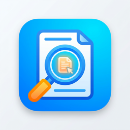

OnePreview
OnePreview 支持
获取设置、Quick Look 预览、支持格式和 App Store 问题的帮助。
在本地查看 Markdown、数据、代码、压缩包、文件夹和 SQLite：Mac 使用 Finder 快速查看，iPhone 与 iPad 从“文件”App 的“打开方式”进入 OnePreview。

OnePreviewOnePreview
获取设置、Quick Look 预览、支持格式和 App Store 问题的帮助。
在本地查看 Markdown、数据、代码、压缩包、文件夹和 SQLite：Mac 使用 Finder 快速查看，iPhone 与 iPad 从“文件”App 的“打开方式”进入 OnePreview。